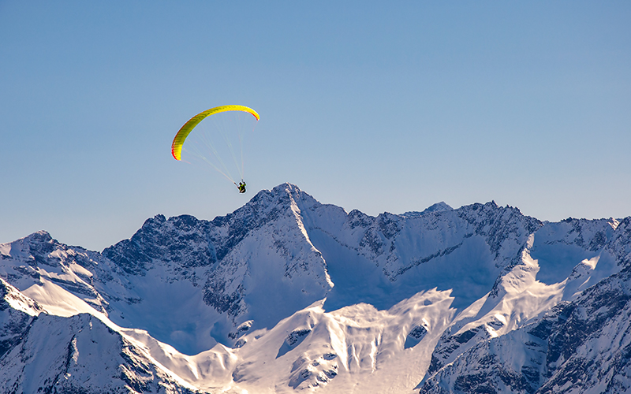
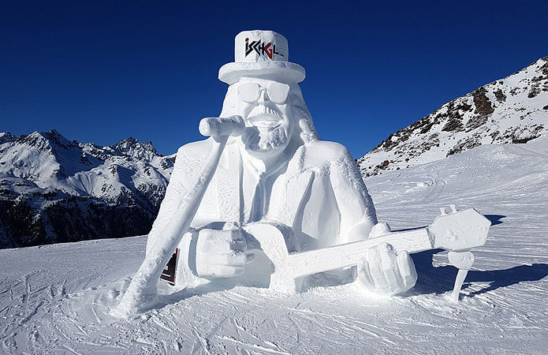

1. Zillertal - Hinterlux
Het Zillertal is een begrip in de skiwereld.
Maar liefst 177 liften maken bijna 500 kilometer piste toegankelijk.
Absolute sneeuwzekerheid op een hoogte van 3250 meter!
Inbegrepen in je skipas: de Hintertuxgletsjer
Sfeervolle dorpjes en authentieke berghutten maken het geheel af.


2. Ischgl - Galtür
Op de grens van Oostenrijk en Zwitserland vind je de Silvretta Skiarena, met de skigebieden Galtür, Kappl, See en Ischgl.
Die laatste staat bekend als het meest attractieve, mooiste en meest sneeuwzekere gebied van Oostenrijk.
Met 233 kilometer afdalingen, meer dan 40 liften en uitgestrekte blauwe, rode en zwarte pistes is dit de hemel op aarde voor de beginnende én de ervaren skiër.
Ischgl beschikt over het grootste snowboardpark van Europa.


3. Schladming
Schladming is een van de modernste skigebieden van Oostenrijk.
Dat heeft de regio te danken aan het wereldkampioenschap alpineski dat er in 2016 plaatsvond.
Waag je aan de FIS-afdaling van de Planai, de snelste Weltcup-piste ter wereld.
Het hoeft dan ook niet te verwonderen dat de regio Schladming-Dachstein op korte tijd een van de populairste wintersportbestemmingen van Oostenrijk is geworden.


FIS-afdaling, de snelste Weltcup-piste ter wereld
Extra Info over de skigebieden
|
Zillertal - Hinterlux |
Ischgl - Galtür |
Schladming |
| Hoogste Punt Skigebied |
3250m |
2872m |
2700m |
| Prijs skipas 7dgn Volwassenen |
Inclusief accommodatie |
* Bij boeking van uw verblijf is u skipas inbegrepen